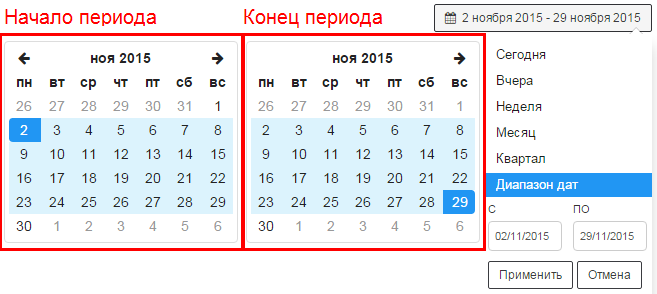
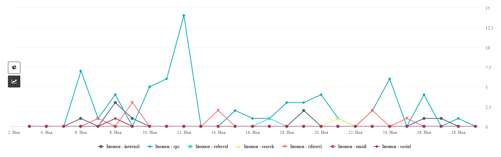
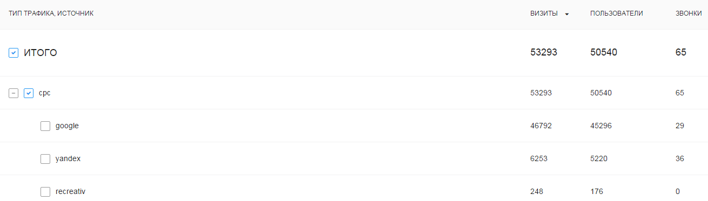
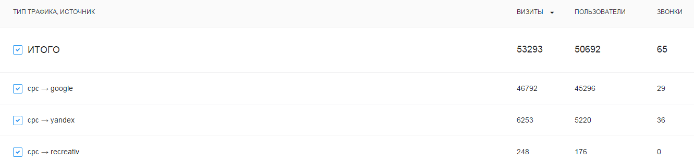
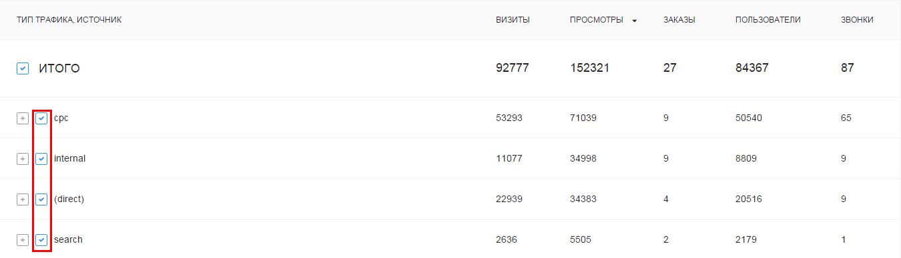
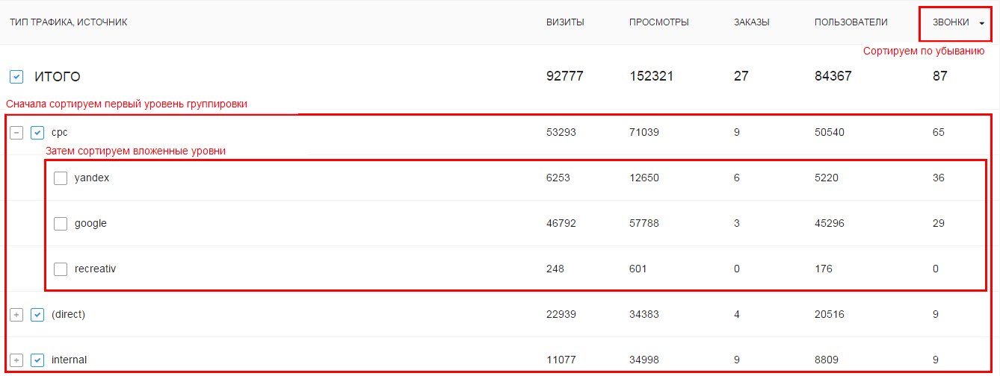

Отчеты
Отчеты предоставляют статистическую информацию о сайте и обращениях посетителей.
Каждый отчет содержит показатели, объединенные в группы (например, по типу трафика). Отчет строится за определенный период времени. По умолчанию он соответствует месяцу. Данные отображаются в таблице и на диаграмме.
Настройка отчета
Ниже описаны инструменты, с помощью которых вы можете настроить вид отчета:

1Список отчетов
Открывает список готовых отчетов. Данные отчеты рекомендуется использовать в качестве примера для создания собственных.

2Выгрузка CSV
Позволяет выгружать отчет в формате CSV.
В выгрузке будут предоставлены данные:
- по указанным измерениям, метрикам
- за выбранный период
- с учетом активных фильтров.
3Метрики на диаграмме
Позволяет выбрать метрики, которые будут отображаться на диаграмме. Выбрать можно только добавленные в отчет метрики.

Круговая диаграмма отображает данные для 1 метрики. Линейная диаграмма позволяет отображать данные сразу для нескольких метрик.
4Период отчета
Вы можете выбрать календарный период времени, за который будет построен отчет. По умолчанию отображаются данные за месяц. Доступны стандартные диапазоны дат, также можно выбрать собственный диапазон.

5Виды диаграмм
Позволяет выбрать диагарамму, подходящую для конкретной задачи. В данный момент доступны следующие виды диаграмм:
Линейная
Показывает изменения абсолютных значений измеряемых величин во времени.

Круговая
Показывает распределение величин по группам.

6Формат отчета
Позволяет выбрать формат отображения данных. В данный момент доступны следующие форматы:
Древовидный список
Данные группируются последовательно по каждому выбранному измерению, формируя древовидную структуру.

Линейный список
Данные группируются одновременно по всем выбранным измерениям, формируя линейную структуру.

7Измерения
Позволяет выбрать измерения, по которым будут группироваться метрики. Для выбранных измерений можно задать порядок группировки.

Порядок группировки данных
Для одинакового набора измерений отображение данных будет отличаться в зависимости от последовательности группировки метрик. Ниже приведен пример отчета, сгруппированого по измерениям Тип трафика, Источник

Отображение на диаграмме
Трекер позволяет отображать любой срез данных на диаграмме. Для отображения среза необоходимо кликнуть по полю слева от него:

В зависимости от выбранных сегментов поле может выглядеть следующим образом:
 - сегмент не отображается на графике
- сегмент не отображается на графике
 - сегмент отображается на графике
- сегмент отображается на графике
- вложенный сегмент отображается на графике
8Метрики
Позволяет выбрать метрики, которые будут отображаться в отчете. Для выбранных метрик можно задать порядок отображения в отчете.

Сортировка данных
Вы можете сортировать данные по определенной метрике. Для этого необходимо кликнуть в отчете на её название.
Сортировка будет осуществляться для каждой группировки в соответствии с их порядком.

9Фильтры
Фильтры позволяют работать с данными, удовлетворяющими определенным условиям.
Условия могут применяться на метрики и измерения, выбранные в отчете (подробнее ниже).

Используемые фильтры отображаются в отдельной панели, из которой их можно оперативно убрать.